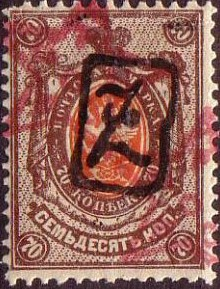
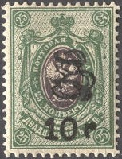
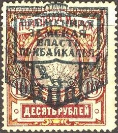
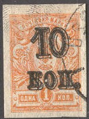
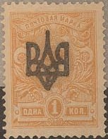
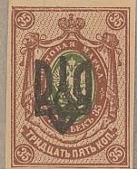

(Forged double overprints, Transcaucasian star and Armenian 'Z')
Return To Catalogue - Russia overview - Russia eagle overprints, part 2
Note: on my website many of the
pictures can not be seen! They are of course present in the
catalogue;
contact me if you want to purchase the catalogue.
Warning: the unoverprinted stamps of Russia were almost without any value and are still available in large amounts. Therefore many forgers have attempted to 'increase' their value by applying forged overprints and surcharges! I quote from 'The Forged Stamps of all Countries' by J.Dorn: "The issues from the beginning of the war are uncontrollable, and must be considered a specialized field, they are a gold-mine for the mass-production forgers."

(Forged double overprints, Transcaucasian star and Armenian 'Z')
A 10.000 on 7 k blue and 15.000 on 15 k brown and blue were issued for Georgia in 1923.

Stamps issued for Georgia, see there
for more details, reduced sizes
Armenia, 'k 60 k' on 1 k orange or 'Z' on stamps of Russia and 'Z' overprints for this country:

Stamps with overprint "OCCUPATION AZERBAIDJAN" were also made for Azerbaidjan.
Transcaucasian Federation, star with letters:


I've been told that the next stamp is a non-issued Zemstvo issue, I have no further information:

I have seen other values with the same 'PYb' (=rouble) overprint, also in combination with a 'Ukrain trident' overprint. For more information click here.
'P. 1 P.' on 4 k red '2p.50k. on 20 k blue and red 'P. 5 P.' on 5 k lilac 'P. 10 P.' on 70 k brown and orange
Value of the stamps |
|||
vc = very common c = common * = not so common ** = uncommon |
*** = very uncommon R = rare RR = very rare RRR = extremely rare |
||
| Value | Unused | Used | Remarks |
| 1 R on 4 k | *** | ? | |
| 2R50k on 20 k | *** | ? | |
| 5 R on 5 k | *** | ? | |
| 10 R on 70 k | *** | ? | |


Other bogus overprints exist, similar to the above one: 10 k on 1 k, 10 k on 2 k, 25 k on 1 k, 25 k on 2 k, 35 k on 1 k, 35 k on 2 k, 50 k on 1 k, 50 k on 2 k, 70 k on 1 k, 70 k on 2 k, 1 R on 1 k, 1 R on 2 k, 2 R on 1 k, 2 R on 2 k, 3 R on 1 k, 3 R on 2 k, 5 R on 1 k, 5 R on 2 k, 10 R on 1 k and 10 R on 2 k.
(Reduced size)
(Reduced sizes)
2 k green 5 k lilac 10 k blue
Value of the stamps |
|||
vc = very common c = common * = not so common ** = uncommon |
*** = very uncommon R = rare RR = very rare RRR = extremely rare |
||
| Value | Unused | Used | Remarks |
| 2 k | ** | ** | |
| 5 k | ** | *** | |
| 10 k | ** | ** | |
The printing stones of the overprints of the Wrangel stamps ended up in France and a large number of 'reprints' was made.
Ukraine issues, arms of Ukraine overprint (various types and colours), examples:


Russia eagle overprints, part 2


{kind=link}
{kind=link}
{kind=link}